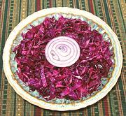

|
Red Cabbage SaladLithuania - Raudonuju Kopustu Salotos | ||||
| Serves: Effort: Sched: DoAhead: |
5 salad * 2-1/4 hrs Best |
Incredibly simple to make, this is one of my favorite salads. Like other very simple recipes, quality of ingredients and exact proportions are critically important. | |||
|
1-1/2 2 3 1 1/2 |
# T T t t |
Red Cabbage Olive oil ExtV Malt Vinegar Salt Sugar |
Make - (2-1/4 hrs - 10 min work)
|